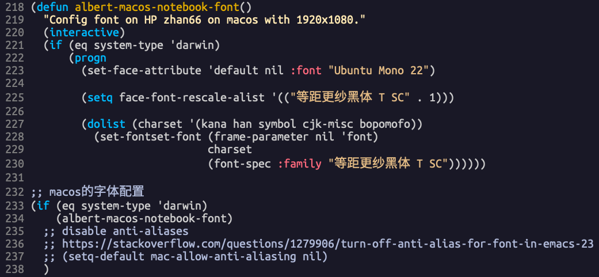
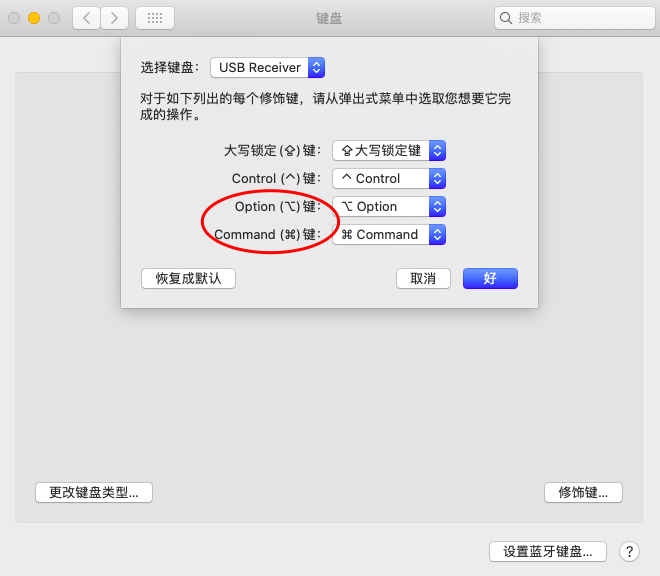

macos配置
最近在玩黑苹果，记录一些macos上的修改过的配置。
emacs设置
字体问题
- 在使用了
hidpi.sh后，1440*810的分辨率，Ubuntu mono 18+ PingFang字体(默认)，显示效果完美。
用1920x1080比较好，hidpi会导致virtualbox的显示有问题。
目前在
1920x1080分辨率下，用Ubuntu Mono 22 + 等距更纱黑体 T SC，效果很好。
最大化 - ok
(if (or (eq system-type 'windows-nt) (eq system-type 'darwin))
(toggle-frame-maximized))
注释 - ok
(when (or IS-WINDOWS (eq window-system 'x) (eq system-type 'darwin))
(global-set-key [?\C-c ?\C-/] 'comment-or-uncomment-region))
PATH设置和ag - ok
macos里的emacs启动时，没法继承shell里面的 PATH ，需要package exec-path-from-shell ，感觉有点搞笑。
(use-package exec-path-from-shell :if (memq window-system '(ns mac)) :ensure t :config ;; (setq exec-path-from-shell-arguments '("-l")) (exec-path-from-shell-initialize))
org template - ok
;; emacs 28 comes with org version 9.3 ;; org-mode的<s <Tab> 补全不正常。 ;; https://orgmode.org/Changes.html ;; 不能用org-version来判断，这时org还没启动 (when (>= emacs-major-version 27) (defvar org-modules '(org-tempo )))
中英文切换
用了 sis ，效果不好，看来我要自己写代码解决了吗？从 emacs mac port ，借鉴了一些代码，改了以后切换ok，就是不能像在win10里面一样，有时候会记不住中英文输入法的状态。
;; [2020-12-02 三 16:38:53] 折腾了半天，也改了代码，发现不稳定，一切换到rime，输入字符，就把emacs卡死了，还是 ;; 用外部输入法切换吧，比较稳定。舒服了 (if (eq system-type 'darwin) (progn (defun emacs-ime-disable () ;; (start-process "set-input-source" nil "/usr/local/bin/macism" "com.apple.keylayout.ABC")) (mac-select-input-source "com.apple.keylayout.ABC")) (defun emacs-ime-enable () ;; (start-process "set-input-source" nil "/usr/local/bin/macism" "im.rime.inputmethod.Squirrel.Rime")) (mac-select-input-source "im.rime.inputmethod.Squirrel.Rime")) (add-hook 'evil-insert-state-entry-hook 'emacs-ime-enable) (add-hook 'evil-insert-state-exit-hook 'emacs-ime-disable)))
make
# 需要安装的一些编译工具链 brew install autoconf automake pkg-config libxml2
坑爹的是，在 NTFS 分区上make， bootstrap的pdump 都生成不了，换成在 APFS 分区上编译，就没问题，神奇啊。
cpu高问题 - helm导致
昨天下午发现emacs的cpu十分不正常，打开org mode后，文件不大，cpu就很高，top时，emacs总能跑到最上面。macvim打开同样的文件，在不用的时候cpu会降到0。
已定位是helm的问题。已经去掉helm，用ivy代替后，cpu在闲时会到0%。
可以用下面的command对emacs进行profile，看哪个函数的cpu使用高，调用次数多：
M-x profile-start M-x profile-report
在多次profile后，发现是helm导致cpu高，helm的timer是怎么用的啊，调了半天的timer时间也没解决，看了一会代码，helm搞得太复杂。只能用counsel了，怀念 helm-mini ，看着mini buffer不太输入，慢慢习惯吧，呜呜！
为什么在win10和linux上没发现helm导致cpu高的问题？
emacs mac port
不是很好用，没发现界面哪里优化了，还是用 emacsformac 或者直接源代码编译吧。
- meta key和emacs官版的位置正好换了过来。不习惯。
byte-recompile-directory
这个命令不是简单的敲进去就可以用的。如果你发现直接使用是提示“编译0个文件”就是说没有合适的文件被编译。在stackoverflow上面的另外一篇文章很好的解释了这个问题，http://stackoverflow.com/questions/1217180/how-do-i-byte-compile-everything-in-my-emacs-d-directory 。
C-u 0 M-x byte-recompile-directory 才可以。
counsel-ag
把counsel-ag改成和helm-ag一样，支持从git的root开始搜索。
- alt-r 从git root目录开始搜索整个项目
- alt-f 搜索当前目录，和counsel-ag是一样的，支持在没有buffer-name的buffer中搜索，默认从home开始搜索。
- c-u M-x counsel-ag 指定目录搜索，默认是buffer的当前目录
(defun counsel-ag-current-dir () "Runs `counsel-ag' against the current buffer's directory." (interactive) (let (my-current-dir (file-name-directory (buffer-file-name))) (if (stringp my-current-dir) (counsel-ag "" (file-name-directory (buffer-file-name))) (counsel-ag "" default-directory) ))) (defun counsel-ag--project-root () "Not documented." (cl-loop for dir in '(".git/" ".git") when (locate-dominating-file default-directory dir) return it)) ;;;###autoload (defun counsel-ag-project-root (&optional query) "Not documented, QUERY." (interactive) (let ((rootdir (counsel-ag--project-root))) (unless rootdir (error "Could not find the project root. Create a git repository there first")) (counsel-ag "" rootdir))) (use-package counsel :bind ( ;; ("s-z" . counsel-M-x) ("M-x" . counsel-M-x) ("C-c n" . counsel-buffer-or-recentf) ("s-r" . counsel-ag-project-root) ("s-f" . counsel-ag-current-dir) ("C-x C-f" . counsel-find-file)) :init (setq enable-recursive-minibuffers t) ; Allow commands in minibuffers :config ;; Integrate with `helpful' (setq counsel-describe-function-function #'helpful-callable counsel-describe-variable-function #'helpful-variable))
使用ivy-occur
在 counsel-ag 查找到字符串后，按 c-c c-o 进入 ivy-occur ，按 w 进行edit，按 c-x c-s 保存修改，按 c-c c-k 丢弃修改。
因为用的是evil，按 w 后，evil mode不正确，无法进行edit，还再要配置evil。
(evil-set-initial-state 'ivy-occur-grep-mode 'normal)
sshpass - ok
# 由于安全原因，brew不允许安装sshpass，直接源代码编译 brew install sshpass
https://stackoverflow.com/questions/32255660/how-to-install-sshpass-on-mac
curl -O -L https://sourceforge.net/projects/sshpass/files/sshpass/1.06/sshpass-1.06.tar.gz && tar xvzf sshpass-1.06.tar.gz
cd sshpass-1.06
./configure
sudo make install
zsh配置
从10.15.1 catalina 开始，水果推荐使用zsh做为默认shell，bash已不推荐。
zsh在使用 vi mode 后，和bash的差别不大，bash的问题是打开关闭几次tab后， history 就没有了，很奇怪。而zsh就可以保留。
只是简单的设置为 vi mode ，同时用不同颜色显示目录和文件，设置提示符。zsh的高级功能，如把git的当前branch显示在提示符上都不需要，不然换台机器就要装 oh-my-zsh ，再配置，没必要，服务器上也没这些高级功能。
export PATH=/usr/bin:/bin:/usr/sbin:/sbin:/usr/local/bin set -o vi export CLICOLOR=1 # for bash #PS1='\n\e[1;37m[\e[m\e[1;32m\u\e[m\e[1;33m@\e[m\e[1;35m\H\e[m \e[4m`pwd`\e[m\e[1;37m]\e[m\e[1;36m\e[m\n\$' # for zsh # 注意等号后面的$ #PROMPT=$'[%n@%m %~]\n$' # for i in {1..256}; do print -P "%F{$i}Color : $i"; done; # PROMPT=$'[%F{28}%n%F{reset}%F{11}@%F{reset}%F{13}%m%F{reset} %~]\n$' # green=28, yellow=11, magenta=13 PROMPT=$'[%F{green}%n%F{reset}%F{yellow}@%F{reset}%F{magenta}%m%F{reset} %d]\n$'
auto mount ntfs partition
用macos，在ntfs分区里新建目录和文件后，权限会有问题，需要手工修改。
$cat /etc/fstab LABEL=Win10 none ntfs rw,auto,nobrowse LABEL=Data none ntfs rw,auto,nobrowse
服务优化
关掉macos的一些不常用服务，可以提高机器性能。
mds和spotlight
MacOS中, mds_stores进程CPU高的问题
mds
# 关闭 sudo mdutil -a -i off # 打开 sudo mdutil -a -i on
spotlight
# 关闭 sudo launchctl unload -w /System/Library/LaunchAgents/com.apple.Spotlight.plist # 打开 sudo launchctl load -w /System/Library/LaunchAgents/com.apple.Spotlight.plist
mds_stores
# 关闭 sudo launchctl unload -w /System/Library/LaunchDaemons/com.apple.metadata.mds.plist # 打开 sudo launchctl load -w /System/Library/LaunchDaemons/com.apple.metadata.mds.plist
Speed Up Mojave Mac OS
Graphics related and User Interface related
These are all useless effects for dock sliding in and delays before something opens up. You can just paste these lines one-by-one into the terminal window.
defaults write NSGlobalDomain NSAutomaticWindowAnimationsEnabled -bool false defaults write NSGlobalDomain NSWindowResizeTime -float 0.001 defaults write -g QLPanelAnimationDuration -float 0 defaults write com.apple.dock autohide-time-modifier -float 0 defaults write com.apple.dock launchanim -bool false sudo sysctl debug.lowpri_throttle_enabled=0
You will need the admin password for commands starting with “sudo”
General Services that are useless
Please just copy and paste these lines into the terminal – as you can see they are just update helpers and other useless services
# ok sudo launchctl remove com.apple.CallHistoryPluginHelper # not started sudo launchctl remove com.apple.AddressBook.abd # ok sudo launchctl remove com.apple.ap.adprivacyd # ok sudo launchctl remove com.apple.ReportPanic # not found sudo launchctl remove com.apple.ReportCrash # not found sudo launchctl remove com.apple.ReportCrash.Self # not started sudo launchctl remove com.apple.DiagnosticReportCleanup.plist # not started sudo launchctl remove com.apple.siriknowledged # not started sudo launchctl remove com.apple.helpd # not started sudo launchctl remove com.apple.mobiledeviceupdater # not started sudo launchctl remove com.apple.screensharing.MessagesAgent # not started sudo launchctl remove com.apple.TrustEvaluationAgent # not found sudo launchctl remove com.apple.iTunesHelper.launcher # not found sudo launchctl remove com.apple.softwareupdate_notify_agent # ok sudo launchctl remove com.apple.appstoreagent # ok sudo launchctl remove com.apple.familycircled
At any given time you can see by typing
launchctl list
to see what your computer is loading.
If you don’t use Safari which I encourage people not to because it is slow and doesn’t honour many of the industry standards for HTML5.
For Users not using Safari
Please just copy and paste these lines into the terminal – as you can see they are just update helpers and other useless services
sudo launchctl remove com.apple.SafariCloudHistoryPushAgent sudo launchctl remove com.apple.Safari.SafeBrowsing.Service sudo launchctl remove com.apple.SafariNotificationAgent sudo launchctl remove com.apple.SafariPlugInUpdateNotifier sudo launchctl remove com.apple.SafariHistoryServiceAgent sudo launchctl remove com.apple.SafariLaunchAgent sudo launchctl remove com.apple.SafariPlugInUpdateNotifier sudo launchctl remove com.apple.safaridavclient
I have not gone through all of the services that are run on start up – I’m sure there are plenty of other processes there that slow your computer down.
I hope this helps!
I found this article quite useful: https://www.lifewire.com/terminal-tricks-to-speed-up-your-mac-4120954
如何关掉com.apple.ReportCrash
关闭
launchctl unload -w /System/Library/LaunchAgents/com.apple.ReportCrash.plist sudo launchctl unload -w /System/Library/LaunchDaemons/com.apple.ReportCrash.Root.plist
打开
launchctl load -w /System/Library/LaunchAgents/com.apple.ReportCrash.plist sudo launchctl load -w /System/Library/LaunchDaemons/com.apple.ReportCrash.Root.plist
win和alt键

在x240上，可以在 “系统偏好设置” -> “键盘” -> “修饰键...” ，把 Option 和 Command 键对调。这样可以在所有机器上保持相同的键位。